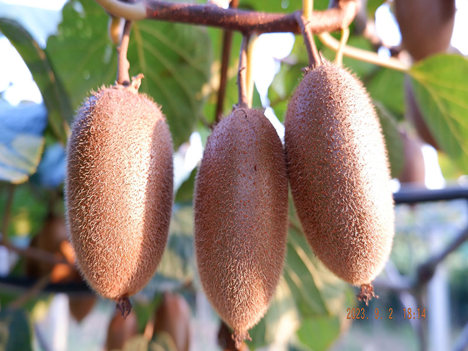

想尝鲜？加微信
领尝鲜装 · 咨询当季鲜果 · 坏果包赔

微信号：XXXXXXX
来自秦岭北麓的翠绿心意

周至，南依秦岭，北濒渭水，是世界猕猴桃原生地之一。这里年均日照充足，昼夜温差大，土壤富含有机质，为翠香提供了理想的生长环境。
翠香由秦岭野生猕猴桃培育而来，是周至自主选育的明星品种。我们坚持树上八九分熟采摘，不催熟、不早采，让每一颗果子在藤上自然积累风味。
从果园到消费者，产地直发，省去中间环节，保证新鲜度和性价比。
气温回升，猕猴桃藤蔓萌发新芽，开出淡黄色小花。
人工疏除多余小果，保留优质果，套袋防虫防鸟。
盛夏光照充足，昼夜温差大，果子自然积累糖分和风味。
糖度达标后人工采摘，当天分拣打包，48小时内发货。
领尝鲜装 · 咨询当季鲜果 · 坏果包赔